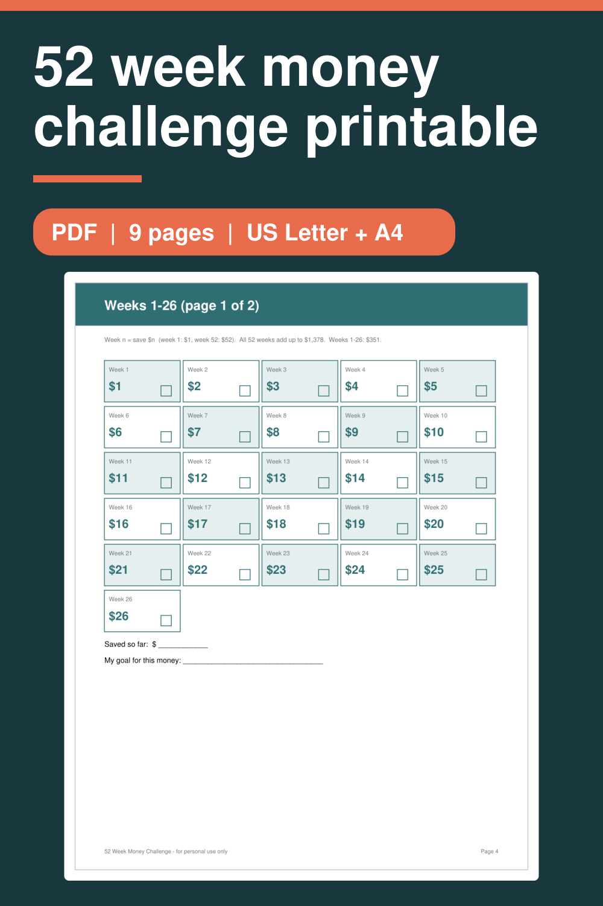

52 Week Money Challenge Printable: Tracker and Running Total

The 52 week money challenge as a printable tracker. The PDF has 9 pages, with files for US Letter and A4: a savings goal page, 52 boxes to tick off from week 1 to week 52, two running total pages and a monthly review. Print it and fill it in by hand; it is not fillable on screen. All Klarblatt content is created entirely by AI (Claude, Anthropic), without creative input from a human.